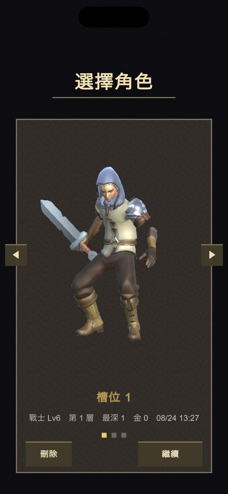
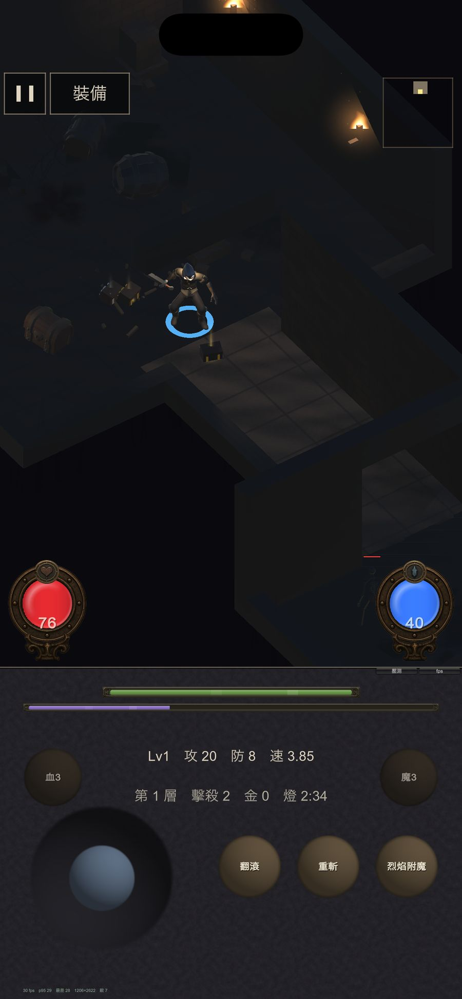
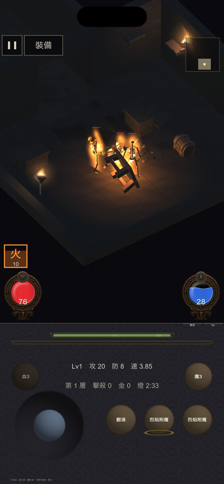
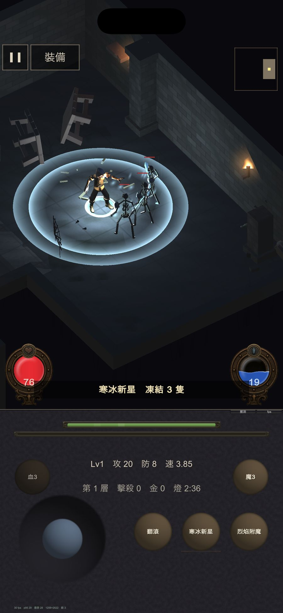
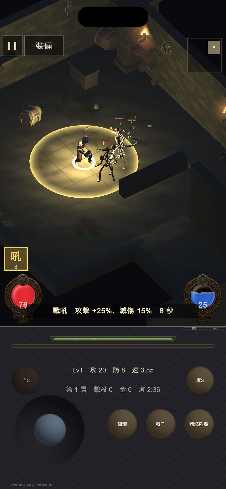
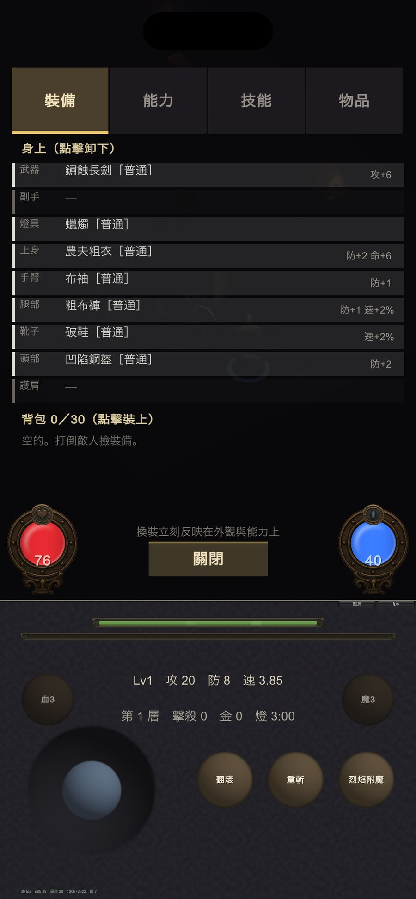
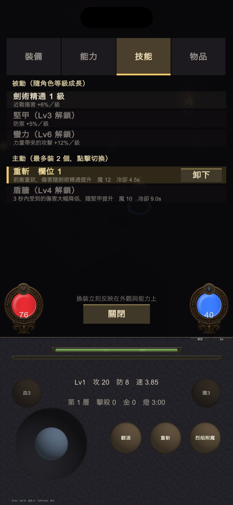

手搓廣告遊戲選集 · 正式上架準備
全部都是草稿。我沒有動 App Store Connect 上任何東西，也沒有送審。 下面每一項你可以直接改，或跟我說要改哪裡。
有兩件事會擋住送審，先講：
① 版本號對不上。ASC 上的版本紀錄是 1.3（今天建立、還沒掛 build），
但已上傳的 build 全部是 2.1 這條線。2.1 的 build 掛不上 1.3 的版本紀錄。
② 版本說明（新功能）是空白的，這一欄送審必填。
| 做法 | 代價 |
|---|---|
| 把 ASC 的版本紀錄改成 2.1 ← 建議 | 幾乎沒有。那筆是今天才建、沒掛 build，改一個欄位就好 |
| 把 App 改成 1.3、重出一版 | 2.1 這條線上的 12 個 build（29–40）全部作廢，要重出 build 41； 已安裝的測試者會看到版號從 2.1 掉到 1.3，像降版 |
語意上 2.1 也比較對：這一版加了一整款遊戲＋技能系統，是大功能更新，不是 1.2 的小修。 2.1 大於已上架的最高版 1.2，符合遞增規則。
第三款遊戲【地城迴響】迎來完整的技能系統。 • 技能書：地城裡會掉落技能書，撿到才學得會，共 14 種主動技能 • 元素附魔：火燒、冰凍、麻痺、劇毒——中了什麼狀態，從怪物身上就看得出來 • 技能會照亮地城：戰吼的音波、寒冰新星的冰浪、燃燒的火光，都是真的光源 • 旋風斬、衝鋒、奧術飛彈現在會把敵人擊退 • 地下城開始出現寶箱，值得繞路 另外修正了幾個技能的加成沒有正確生效的問題，並新增 Game Center 排行榜， 比比看誰下得更深。
在現有文字上新增【地城迴響】整段，並更新「共通特色」與結尾那句 ——原本的描述只寫了兩款遊戲，但 App 裡已經有三款。
你一定在某個廣告裡看過這種遊戲——點進去卻發現根本不是那回事。 所以我們手搓了真的版本：廣告裡長怎樣，玩起來就怎樣。 【吸血鬼復仇】 你是諾克特恩家族最後的吸血鬼，在怪物狂潮中撐過 40 分鐘、征服五大關卡！ • 五大關卡：幽暗森林、血月荒原、深淵沼澤、冰雪絕地、魔王城堡 • 30 種怪物、10 隻獨立技能 Boss：環形彈幕、衝刺、召喚、追蹤射擊 • 7 種全自動武器 + 4 種隱藏進化組合，15 種被動道具自由搭配 • 撿寶石升級三選一、擊敗 Boss 開寶箱、精英怪掉落強力道具 • 浮動搖桿操作，單手就能玩 【殭屍防線】 指揮你的小隊在三線戰場死守防線，抵擋一波波神機錯亂狂潮！ • 左右切換車道，站上通道自動開火 • 打擊封印箱解鎖裝備：人數、火力、射速、射程 • 四種武器徹底改變打法：步槍、火焰噴射器、電弧槍、榴彈砲——換裝連兵種造型一起變！ • 8 波狂潮、每波尾聲的厚血魔王，緊張感直線上升 【地城迴響】 帶著一支火把走進地下城，照得到的地方才是你看得見的地方。 • 每一層都重新生成：房間、走廊、寶箱、商人，沒有兩次一樣 • 光是要爭取的資源——離開火光就是全黑，燈具跟武器一樣重要 • 戰士與法師兩種職業，力量／敏捷／智力／體力自由配點 • 九個裝備欄位、隨機詞綴，橘色傳奇裝備稀有掉落 • 技能書系統：14 種主動技能要撿到書才學得會。把武器點著讓敵人整隻燒起來、 寒冰新星凍住整圈、旋風斬邊走邊轉、召喚灰燼僕從替你打 • 死亡不是重來：角色等級、學會的技能、身上的裝備都留著，下一次走得更深 【共通特色】 • 三款遊戲，一次下載，全部免費 • 三種難度：簡單、普通、困難（困難計分 ×3，敢不敢挑戰？） • 全站排行榜 + Game Center：上傳你的暱稱與成績，跟所有玩家一較高下 • 8-bit 風格合成音效與每關專屬背景音樂 • 免費遊玩、無廣告、無內購 今晚，你要當獵人、守軍，還是提著燈走進地城的那個人？
殭屍,吸血鬼,地城,地下城,生存,塔防,探險,角色扮演,倖存者,街機,zombie,vampire,dungeon,survivor,roguelike,RPG
原本 59 字元。拿掉重複性高的「防禦」「動作」，換進地城相關字。
模擬器實拍，已裁成 App Store 6.5 吋規格 1284×2778（原生 1206×2622， 等比放大後從中間裁，沒有變形）。這裡顯示的是壓過的版本，原檔是全解析度。







截圖總數有上限，要取捨。現有截圖組是 8 張（吸血鬼 4 + 殭屍 4）， 而一組最多 10 張。加地城迴響就得砍掉一些舊的。 我的建議是吸血鬼 3、殭屍 3、地城 4，但這是你的取捨。
另外這些是遊戲原始畫面，沒有加行銷文字框。要不要做成有標題的宣傳版，你決定。
DnD 的排行榜目前在 ASC 上不存在——只有吸血鬼與殭屍兩個。 Build 40 的程式已經在送分到下面這個 ID，但 ID 不存在的話分數會被靜靜丟掉，不會報錯。
| 欄位 | 建議值 |
|---|---|
| Leaderboard ID | com.alexvampire.gamecollection.dnd.score 要一字不差 |
| Reference Name | 地城迴響 層數.等級 |
| 分數格式 | Decimal (0.000)建議 |
| 排序 | Higher is Better |
| 提交類型 | Best Score |
| 循環 | 不循環（永久）建議 |
送上去的數字是「層數 × 1000 ＋ 角色等級」。設 Decimal(0.000) 會顯示成
12.034＝第 12 層、Lv 34，一個欄位同時給你要的兩件事。
設 Integer 會顯示 12034，玩家看不懂。
代價是跟另外兩個板（都是 Integer）不一致——建議用名稱補說明，
看到小數點就知道怎麼讀。
另外兩款是單場計分，一局結束得一個分數，適合 30 天週期賽。 地城迴響不一樣：存檔是持續累積的角色，等級、技能、裝備死了都留著， 「最深層數」是一輩子的紀錄。30 天砍掉一次跟這個成長節奏是牴觸的。
目前三款遊戲的成就數是 0。要做就得設計一整套、每個都要寫程式送出 ＋在 ASC 逐項建立，是獨立的一塊工作。它不擋上架，之後任何一版都能補。 這次先把三款遊戲的商店頁補齊比較實在。
| 項目 | 結果 |
|---|---|
| DEVELOPMENT_BUILD | 0 ✓ |
| VR_SHOTS | 0 ✓ |
| Deployment target | 15.0 ✓ |
| 加密宣告 ITSAppUsesNonExemptEncryption | false ✓ |
| 沙盒外絕對路徑寫檔 | 無 ✓ |
| 版本 / build | 2.1 / 40 ✓ |
| 技能書掉率 | 第一本 8%、之後 0.08%、橘裝 0.15%——已是正式設計，無測試殘留 ✓ |
| BETA 字樣 | 已移除 ✓ |
| 要決定的 | 為什麼輪不到我決定 |
|---|---|
| 版本號走 2.1 還是 1.3 | 影響已上傳的 12 個 build 要不要作廢，而且版號是產品對外的宣告 |
| 版本說明／描述／關鍵字的文字 | 這是行銷語氣與定位，我只能給草稿 |
| 截圖選哪幾張、舊的砍哪些 | 上限 10 張，取捨取決於你想主推哪一款 |
| 排行榜格式 Decimal vs Integer | 可讀性 vs 與另外兩個板一致，兩邊都說得通 |
| 排行榜要不要循環 | 週期賽讓新玩家有機會上榜，永久榜獎勵長期投入，是取捨 |
| 成就要不要這次做 | 是範圍決定，會影響這一版什麼時候能送 |
送審這個動作我不會自己做。ASC 上的版本紀錄、排行榜建立、截圖與文案上傳、 以及按下送審，照專案慣例都是你自己操作。你說「送審」我也只會先幫你把 build 準備好，不會替你按下去。